Your downloads become a library
Thumbnails, durations, sizes, grouped by day. Find yesterday's video in two seconds.
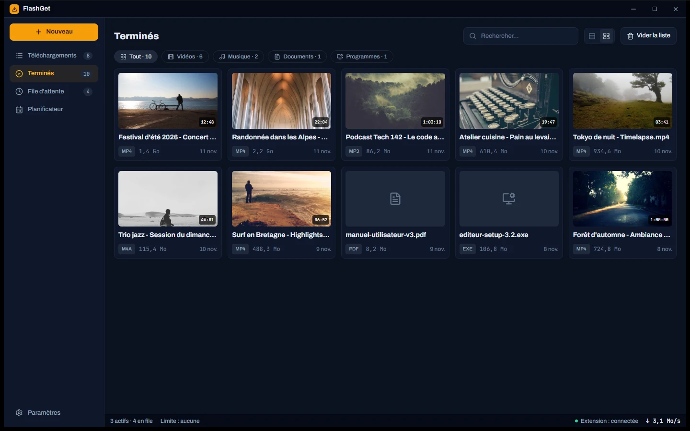
Files, videos, playlists: FlashGet speeds them up, resumes after a dropped connection and files everything away for you.
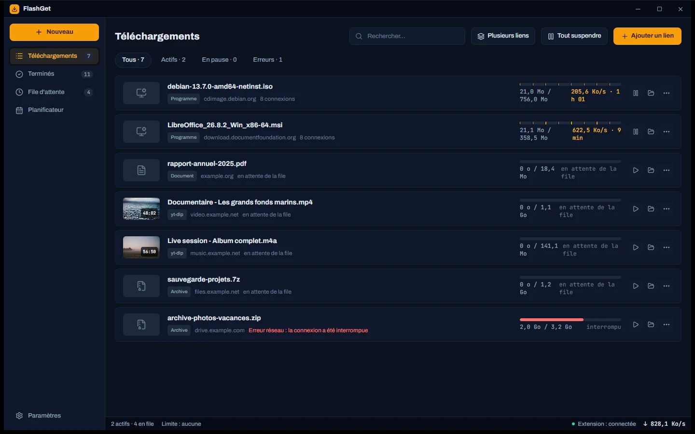
Every screen has one job: prepare, follow, find again. These are real screenshots of FlashGet 2.0, whose interface is in French.
Thumbnails, durations, sizes, grouped by day. Find yesterday's video in two seconds.

Paste a link: formats, qualities and sizes show up. Your preferred quality is already selected.
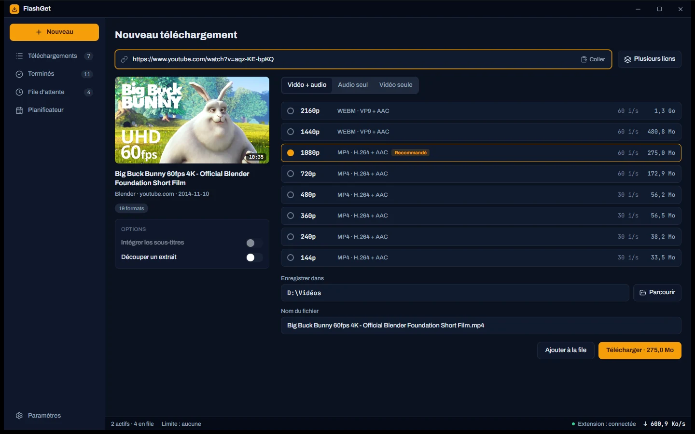
FlashGet retries with a growing delay and resumes exactly where it stopped.
Drag to reorder, put urgent files first, start everything in one click.
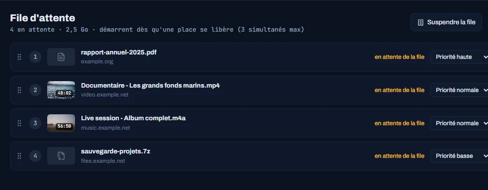
The theme follows your taste, or the system's.
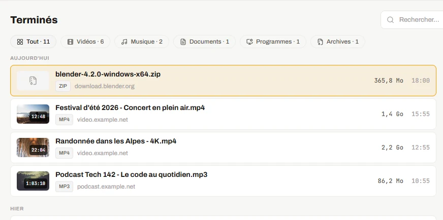
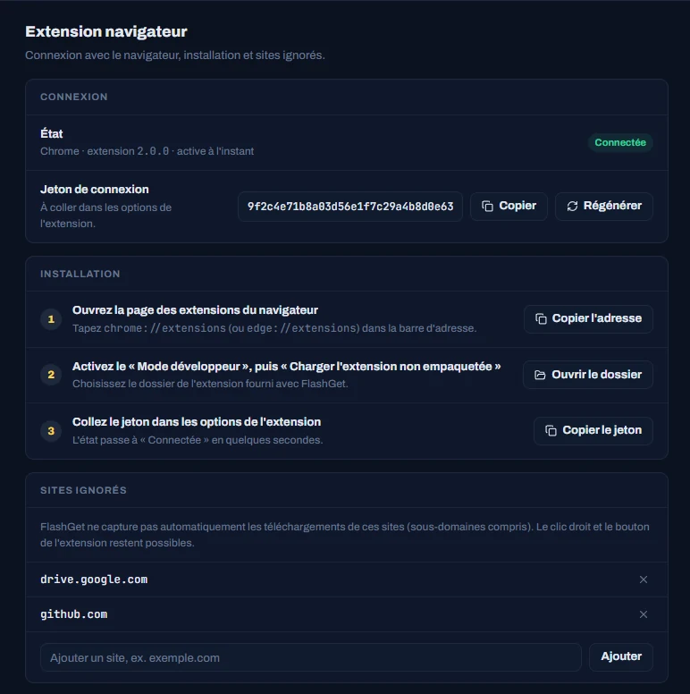
Downloads land in FlashGet with the page's cookies, so sites that need you to be signed in still work.
Eight clear sections. Every change is saved right away, no "Apply" button.
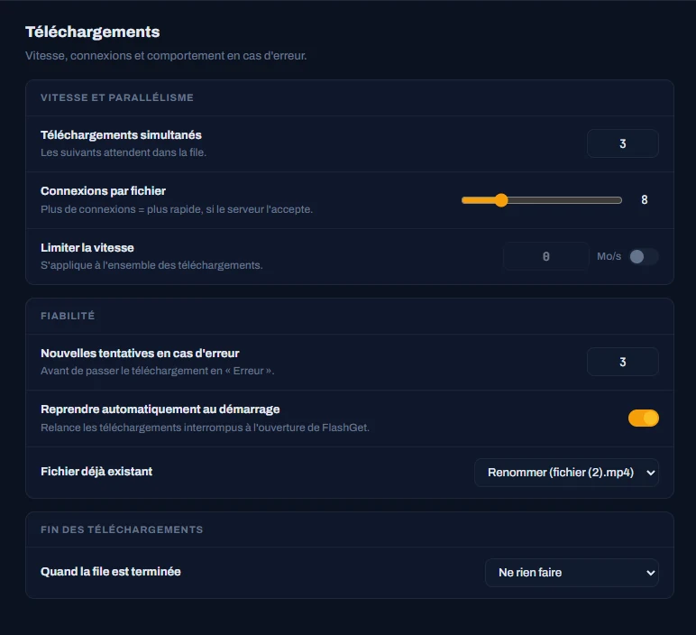
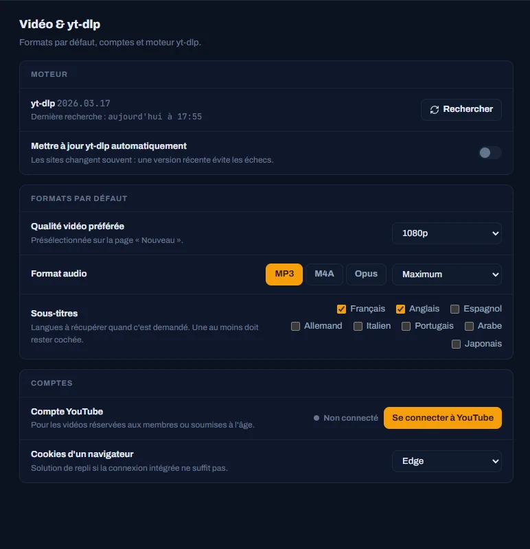
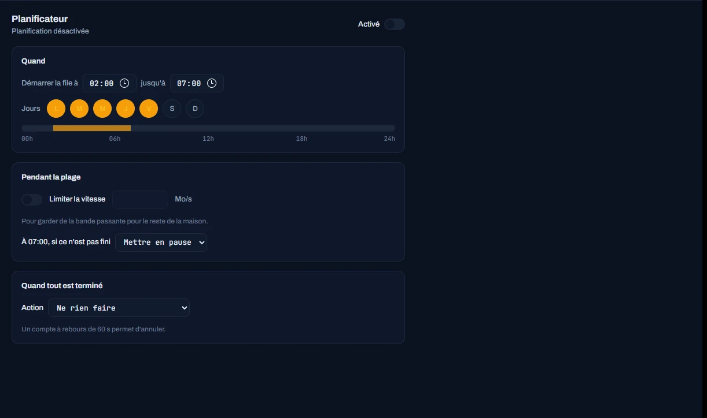
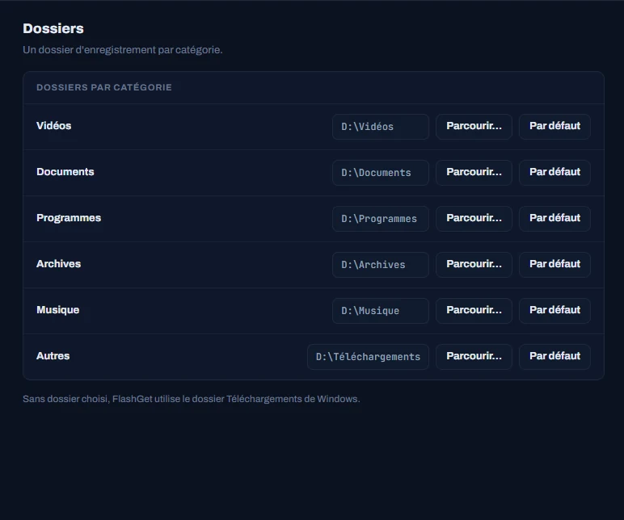
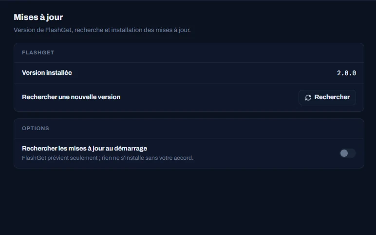
It comes with FlashGet. Open Settings, then Browser extension: three guided steps.
Every version and its release notes are on GitHub.
See all versionsIf FlashGet saves you time, you can support its development.
Buy me a coffeeAnother question? Open an issue on GitHub.
Not yet. FlashGet's interface is in French for now. This page and the project's documentation are in English.
No. Close the old FlashGet, then install 2.0: your downloads, settings, extension token and YouTube sign-in are carried over on first launch. Then reload the extension in your browser.
The installer isn't signed with a Windows code-signing certificate yet, so SmartScreen flags it as a precaution. Choose "More info", then "Run anyway". FlashGet's updates, on the other hand, are signed and checked before they install.
FlashGet lets you know, and nothing installs without your click. Only yt-dlp, the video engine, updates automatically once a day, because sites change often. You can turn that off.
HLS and DASH streams, on demand or live, and over a thousand sites thanks to yt-dlp. DRM-protected platforms such as Netflix or Disney+ are not supported.
No. It only talks to FlashGet, on your own computer, and only with the token you gave it. Sites you ignore are never captured automatically.